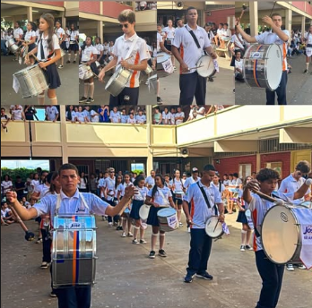

Sobre a escola
A nossa escola tem alguns cursos como: Informática e Segurança do trabalho, para quem quer estudar mesmo é uma boa oportunidade já que a maior parte desses cursos são pagos. Basicamente, é sobre agarrar as oportunidades que a vida te dá. Embaixo vou deixar fotos da nossa escola e de alguns alunos.
Sj Fotos
